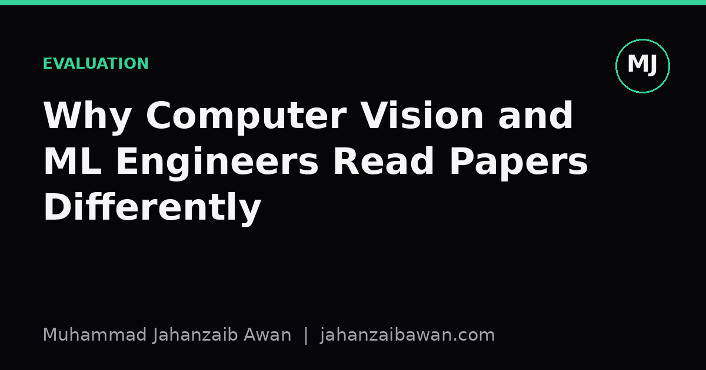
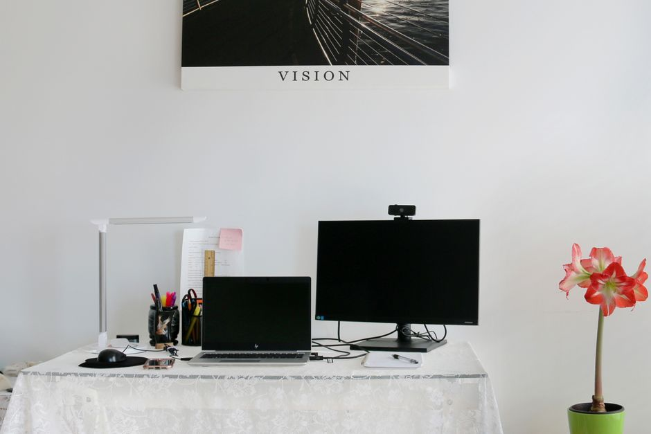

Why Computer Vision and ML Engineers Read Papers Differently
Two engineers can read the same paper and walk away with completely different mental models. The gap often comes down to what each discipline has been burned by before.

The same paper, two different reads
Hand the same paper to a computer vision engineer and a general ML engineer and watch what each one circles first. The vision engineer flips straight to the qualitative figures: the grid of predicted bounding boxes, the segmentation masks overlaid on real images, the failure cases tucked into the appendix. The ML engineer, especially one who works on tabular data, recommendation, or time series, goes straight to the tables, the ablations, and the description of the train, validation, and test splits. Neither is wrong. They have simply been trained by different disasters.
This difference is not cosmetic. It shapes which claims each person trusts, which results they try to reproduce, and which parts of a method they quietly discount as marketing. Understanding why the two camps read differently is useful even if you work across both worlds, because it tells you where your own blind spots are likely to be.
I think the root cause is simple: vision engineers have been burned by models that look great on numbers and terrible on pixels, while general ML engineers have been burned by numbers that look great and turn out to be leaked, overfit, or measured on a benchmark that no longer resembles the deployment distribution. Each group reads defensively against the failure they have personally lived through.
Why vision engineers trust their eyes first
Vision is unusual among ML subfields because the output is directly interpretable by a human without any translation step. If a model segments a pedestrian as part of the road, you see it instantly. If a classifier mislabels a stop sign, the image makes the failure obvious in a way that a confusion matrix cell never quite does. Because of this, vision engineers have learned that a strong headline metric, say a mean average precision of 0.71 against a previous best of 0.68, can hide a model that fails constantly on rain, night scenes, or small distant objects, none of which may be well represented in the test set.
So the experienced vision reader goes hunting for the qualitative appendix before trusting the quantitative one. They look at what the failure cases actually look like, not just how many there are. They ask whether the test set resembles the conditions the model will actually face, because vision benchmarks are notorious for having a narrow visual distribution: similar lighting, similar camera angles, similar object scales. A three point gain in mAP measured on a benchmark shot entirely in daylight tells you very little about performance at dusk, and a vision engineer who has shipped a model into the real world knows this instinctively.
There is also a strong culture in vision of checking for subtle train and test overlap, because images are easy to duplicate or near-duplicate across splits without anyone noticing. Two photos taken seconds apart on a dashcam, one landing in training and one in validation, will look almost identical to a convolutional network, and a model can quietly memorise rather than generalise. A vision reader has usually seen this happen at least once, so claims of large gains are treated with polite suspicion until the splitting procedure is spelled out.
Why general ML engineers read the tables first
General ML engineers, by contrast, rarely get the luxury of eyeballing an output and immediately knowing whether it is right. A predicted churn probability of 0.42 is not visually verifiable the way a bounding box is. This forces a much heavier reliance on the statistics themselves, which in turn makes these readers acutely sensitive to how those statistics were produced.
So the first thing an experienced ML reader checks is the splitting strategy. Was the validation set a random split, or was it split by time, by user, or by some other grouping variable that actually matters in deployment? I have seen papers report an AUC of 0.89 on a random split of transactional data, where the same model drops to something like 0.74 once the split respects time ordering so that future transactions cannot leak information about past ones through shared customer identifiers. That fifteen point gap is not noise, it is the difference between a paper result and a production result, and a reader trained on tabular and time series problems will look for it before reading a single other number.
The second instinct is to ask what the baseline actually was. A gradient boosted tree tuned properly is an extremely strong baseline for most tabular problems, and a paper that beats it by a fraction of a percent after introducing a far more complex architecture is making a weak case, even if the complex model wins on paper. ML engineers who have spent time tuning XGBoost or a well regularised linear model against a flashy neural method have learned that a lot of claimed gains evaporate once the baseline is given a fair tuning budget. This makes the ablation table, not the qualitative story, the centre of attention.
Reading across the gap
The useful move is not to decide which reading style is superior, it is to borrow habits from the other camp. A vision engineer should still ask about the splitting procedure, since near duplicate frames, correlated camera sessions, and biased capture conditions can inflate numbers just as badly as any tabular leakage. A general ML engineer should still demand to see failure cases where possible, even if that means sampling predictions on held out data and manually inspecting the worst ones rather than trusting a single summary statistic.
In practice I try to run both checks on every paper I read, regardless of domain. First, what would a strong, properly tuned baseline do here, and has the paper actually given it a fair chance. Second, is there any plausible way information from the test distribution could have leaked into training, whether through shared entities, near duplicate samples, or a split that ignores time. If a paper survives both questions, the headline number starts to mean something. If it does not, the number is a hint at best, not evidence.
The broader lesson is that every subfield develops its reading habits in response to its own characteristic failure mode, and those habits are worth stealing even outside your home discipline. Reading a paper well is less about domain expertise and more about knowing which questions your field has learned to ask the hard way, and asking them anyway, even when the paper is not in your usual area.
